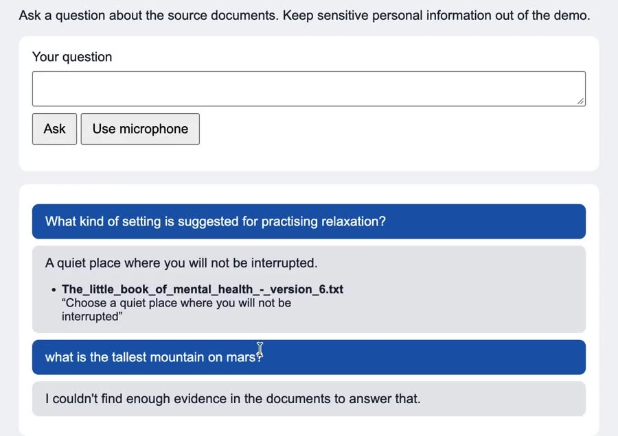
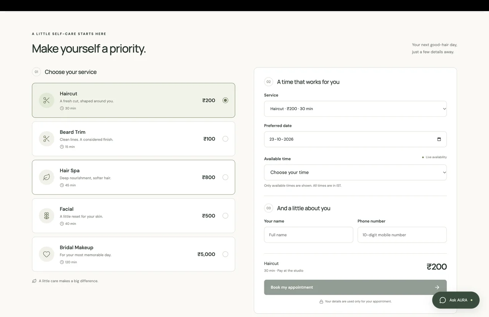
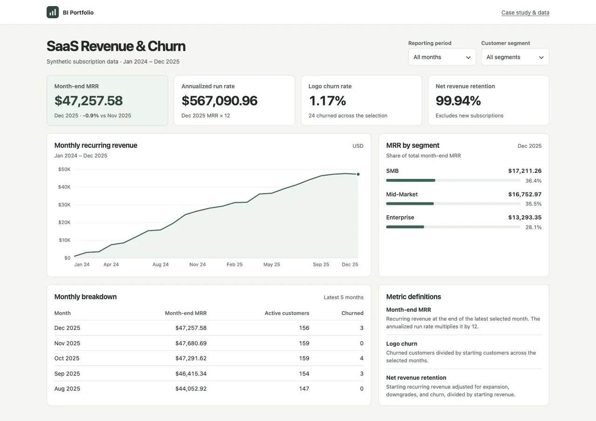

Flask · MiniLM · Groq
Mental Health Buddy
Document Q&A with verified quotations and a fallback when the documents lack evidence.
8 of 10 top-two hits in the retrieval pilotApplied AI & Python backend
I build document Q&A apps that cite their sources and Python APIs that manage access to shared work.
Previously at Ethara AI.
What kind of setting is suggested for practising relaxation?
Verified source quote
“Choose a quiet place where you will not be interrupted”
The Little Book of Mental Health

Flask · MiniLM · Groq
Document Q&A with verified quotations and a fallback when the documents lack evidence.
8 of 10 top-two hits in the retrieval pilot
React · TypeScript · Cloudflare D1
Booking, billing, and staff workflows backed by one transaction for each reserved appointment.
27 API checks passed in CIPython · LangGraph · Streamlit
Routes destination questions between a local index and web search. Adds weather and images.
6 checks passed in CIPython · Flask · SQLAlchemy
Project and task APIs with role checks, signup validation, and transactional writes.
22 tests passed in CI
Python · Power BI · DAX
Four filterable dashboards for SaaS, banking, healthcare, and supply chain.
Synthetic dataset checks passedFlask retrieval prototype over video transcripts. Code · Source checks
Power BI report design and 1,200 validated synthetic transactions. Report design · Data validation
Excel sales analysis on a credited dataset. Dashboard screenshot · Dataset attribution
Earlier design and experimentation work documented in the LLM Architect Hub.
Open a case study to find its demo, implementation, and test results.
Internship work on LLM workflows, prompt iterations, and response quality review.
LinkedInGenerative AI work with agents, retrieval pipelines, and Python API integrations.
Portfolio notesWeb application development and frontend implementation.
LinkedInPython, TF-IDF, MiniLM, LangChain, LangGraph, and model APIs.
See the retrieval pilotFlask, SQLAlchemy, SQLite, Cloudflare Workers, D1, React, TypeScript, and Streamlit.
See the booking architecturePower BI, DAX, Excel, and Python validation scripts for datasets and metrics.
See the dataset checksI studied computer science at the Institute of Technology and Management in Gwalior. I’m interested in the part of building AI apps where you can trace an answer back to evidence and measure whether the right information was retrieved.
Browse all repositoriesI’ve also worked on posters, podcast thumbnails, and promotional graphics.
I’m open to entry-level applied AI and Python backend roles.
A Flask prototype that answers questions about two wellbeing documents. The retriever combines keyword and semantic rankings, then the app checks that each quote appears in the retrieved text.
A hit means one of the first two results contains the annotated passage. Each method used the same 10 new questions.
| Method | Top-two hits |
|---|---|
| Hybrid search | 8 of 10 |
| Similarity search | 8 of 10 |
| Maximal marginal relevance | 5 of 10 |
This React app uses Cloudflare Workers and D1 for booking and invoicing. A database transaction inserts the booking and its occupied time slots together. When a slot overlaps, the transaction rolls back and the API returns a conflict.
Choose a service and date in the live app to see the available times. The linked CI run passed 27 checks against D1-compatible SQLite, including overlap rejection, rescheduling rollback, and saved invoice prices.
LangGraph routes destination requests between a local index and web search. The app combines the result with an itinerary, weather, and images for the Streamlit UI.
The Flask and SQLAlchemy application manages teams, projects, and assignments. Its access tests exercise who can read, edit, and delete shared work.
Four interactive HTML dashboards use validated synthetic datasets. The SaaS case also includes an editable Power BI project and a KPI reconciliation.
Select Dec 2025 in the SaaS dashboard and switch Customer segment from All segments to SMB. Monthly recurring revenue changes from $47,257.58 to $17,211.26. Customer churn moves from 1.89% to 2.17%.